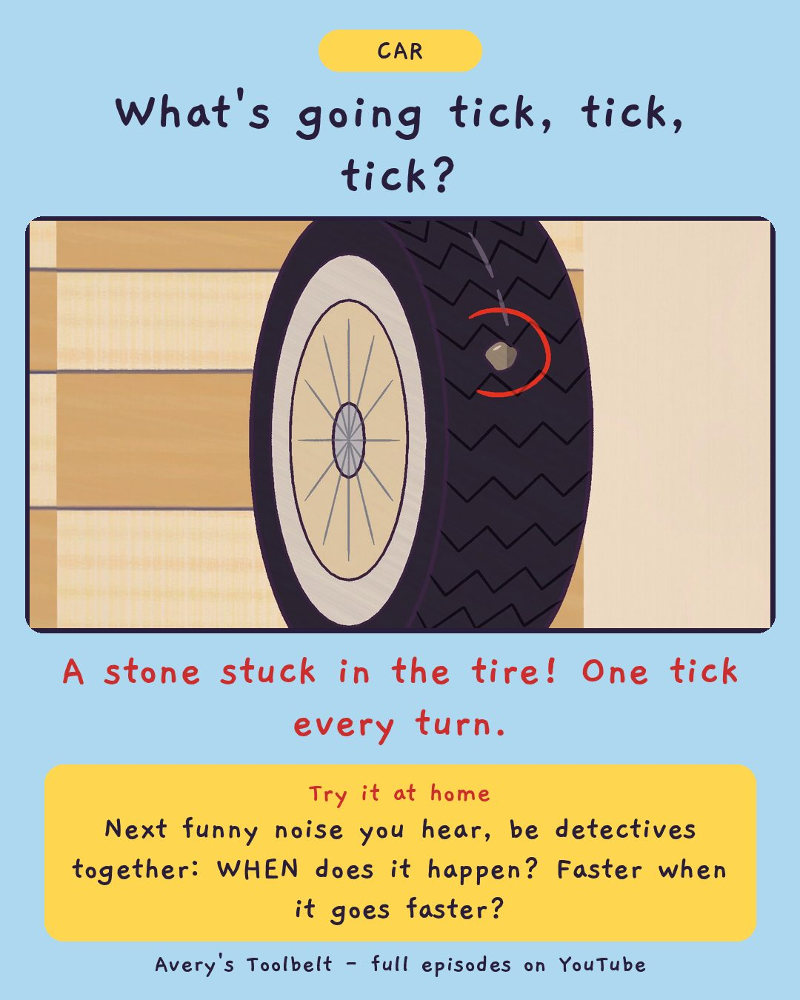

The NoiseWhat Is That Ticking in the Car?
那個聲音

What's going tick, tick, tick?
A stone stuck in the tire! One tick every turn.
Try it at home
Next funny noise you hear, be detectives together: WHEN does it happen? Faster when it goes faster?
Free printable coloring page (PDF) Watch the full episode on YouTubeAbout this episode, for grown-ups
There is a tiny tick somewhere in Betsy, and Avery is the only one who can hear it. Dad turns the radio off and really listens - twice - and hears nothing. Gus, who does not want to be left out, can suddenly hear it everywhere: in the kitchen, in the bath, even next to a car that has been switched off for two hours.
For a day and a half Avery tells Dad what the tick sounds like. Like a fingernail on a jar, but smaller. It does not help. So Dad turns over an old invoice and writes one word at the top.
What children find out: you can't find a noise by saying what it sounds like. You find it by saying WHEN. Faster when the engine goes faster - or faster when we go faster?
For grown-ups: an episode about being the only one who notices something, and about the question that turns a worry into a plan.